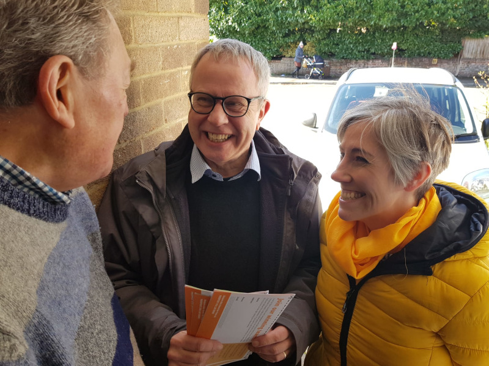

Chris White for English Party Chair
Campaign Video
Endorsements
My plan for the English Party
“We need an English Party that represents all of England, empowers local parties and revitalises our regions”
These are the first ever member elections for the Liberal Democrats in England. Previously the English Party, although key to how we do our business beyond Westminster campaigning and policy making, has remained obscure. It has things to do. I intend to get them done.
Strengthen local parties
The English Party can provide a service in terms of local staffing, the work of local and regional treasurers and other bureaucratic but necessary procedures.
Local party development is needed everywhere but especially where we are weakest.
Support and develop regions
We have to provide more support for regions with lower membership and fewer MPs using as appropriate the new Chief Executive role as well as cash help.
Prepare for strategic mayors
We need to reform and align with Westminster elections the mayoralty approvals and selections system.
More members
We must have a serious rethink over membership recruitment and retention. Good practice from London Region needs to become nationwide.
Integrated campaigning
We need to help council groups, local parties and MPs to work together more effectively.
Sorting out tithing policy
The tithing issues at all levels need resolving in detail.
Improve diversity
A lack of diversity remains a problem in many parts of the country. The Party must take practical activity at all levels.
Cultivate Young Liberals
We must stop overlooking the importance of Young Liberals: many parts of the country don't even think about them as a resource, or indeed, as the future.
Endorse Chris
Chris gets things done
32 years a councillor, including leading St Albans District Council
Turned Lib Dem opposition into a minority administration and then into having nearly 90% of the seats.
Member of Federal Board for many years as Principal Councillor representative
Chris summated the conference debate which brought in all women shortlists and helped break male dominance in candidates and MPs.
Reforming the way the parliamentary selections operate
Chris saw early that the previous system of Westminster candidate approvals was weakening the party's ability to campaign. He was one of those who successfully pressed for the system applying in England to change.
Daisy Cooper's Campaign Director in the 2019 and 2024 General Elections
Chris worked with Daisy to move the Lib Dems from third to second place in 2017 and then to victory in 2019 – one of the few bright spots in an otherwise dismal General Election.
Chair, East of England Region
Chris has overseen making the region more relevant to local parties and campaigners and with improved financial management.
Major role in the reforms of the English Party
Chris drafted many of the recent changes, introducing for the first time direct elections and councillor representation on the new Board.